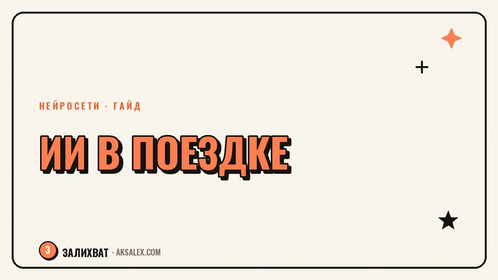

Нейросети помогают спланировать путешествие без турагента

Раньше маршрут на отпуск собирали из десятка вкладок: форумы, блоги путешественников, карты, отзывы на отели. Нейросеть сводит это в один диалог - ты описываешь даты, бюджет и желания, получаешь черновик маршрута за несколько минут. Это не отменяет турагента для сложных случаев с визами и групповыми турами, но для самостоятельной поездки по городу или паре стран закрывает большую часть рутины планирования.
Почему люди уходят от турагентов к нейросетям
Турагент продаёт готовые пакеты и получает комиссию от отелей и перевозчиков, поэтому его советы не всегда объективны. Нейросеть не продаёт ничего - она комбинирует информацию из открытых источников под твой запрос. Это не делает её советы идеальными, но делает их бесплатными и доступными в любое время, без ожидания ответа менеджера.
Второй довод - скорость. Чтобы собрать маршрут на пять дней по городу вручную, нужно часа два чтения форумов и отзывов. Нейросеть выдаёт черновик за минуту, и дальше ты не читаешь десять статей с нуля, а правишь уже готовый список: что убрать, что переставить по дням, что уточнить в актуальных источниках.
Как собрать маршрут за один вечер
Разбор по шагам
- Шаг 1: укажи город или страну, даты поездки и число людей
- Шаг 2: опиши формат отдыха - активный, спокойный, с детьми, музеи или природа
- Шаг 3: назови бюджет на день, чтобы нейросеть не предлагала рестораны не по карману
- Шаг 4: попроси маршрут по дням с указанием районов, а не разрозненный список точек
- Шаг 5: уточни логистику между точками - пешком, на метро, нужно ли такси
После черновика маршрута стоит отдельно спросить про актуальность: часы работы музеев, сезонные закрытия, визовые нюансы меняются быстрее, чем обучалась модель. Нейросеть честно предупреждает об этом ограничении, если спросить прямо, но сама инициативу проявляет не всегда.
Бюджет и бронирование: где помощь реальна
Нейросеть хорошо считает примерный бюджет поездки, если дать ей ориентиры по стране: условную стоимость обеда, проезда, входных билетов. Она сводит цифры в таблицу по дням и сразу показывает, где бюджет расползается - например, если каждый день планируется ресторан, а не кафе.
Нейросеть считает цифры, которые ты ей дал, а не те, что сейчас на самом деле. Перед поездкой любую сумму и курс стоит перепроверить в живом сервисе бронирования.
Само бронирование нейросеть не делает - это задача сайтов отелей и агрегаторов. Но она помогает составить список вопросов перед бронированием: нужен ли трансфер, включён ли завтрак, какой район безопаснее для вечерних прогулок.
Язык и бытовые вопросы в поездке
В самой поездке нейросеть чаще всего используют как переводчика и справочника на ходу: перевести меню, составить фразу для администратора отеля, объяснить непонятную надпись на упаковке лекарства. Это быстрее, чем искать разговорник, и работает даже с редкими языками лучше, чем классический переводчик слово в слово.
Второй частый сценарий - бытовые вопросы на месте: какой автобус идёт в аэропорт, как работает местная система чаевых, нужна ли сим-карта или достаточно вайфая в отеле. Такие ответы стоит перепроверять по свежим отзывам, если решение влияет на деньги или безопасность.
Какой сервис выбрать для планирования поездки
Разные нейросети по-разному справляются с планированием путешествий - вот на что обратить внимание.
| Сервис | Маршруты по дням | Бюджет и расчёты | Работа на русском |
|---|---|---|---|
| ChatGPT | хорошо держит логику дней и районов | считает бюджет по заданным ориентирам | уверенно |
| Gemini | удобно связан с картами и поиском | справляется с простыми расчётами | хорошо |
| YandexGPT | неплохо знает русскоязычные направления | слабее с зарубежной спецификой цен | лучше всех на бытовом русском |
| Claude | подробно расписывает логистику и альтернативы | аккуратно сводит таблицу расходов | уверенно |
Когда без турагента или живого совета не обойтись
Есть зоны, где нейросеть не заменяет человека: сложные визы с индивидуальными документами, групповые туры с юридической ответственностью, страховые случаи и форс-мажоры в пути. Здесь важнее горячая линия агента или страховой компании, а не чат с моделью.
Разумный подход - собрать маршрут и бюджет самостоятельно с нейросетью, а решения с юридическими последствиями - визу, страховку, сложную логистику с пересадками - сверить с актуальными официальными источниками или специалистом.
Частые вопросы
Может ли нейросеть полностью заменить турагента?
Для самостоятельной поездки по городу или паре стран - да, она справляется с маршрутом и бюджетом. Для сложных виз, групповых туров и страховых вопросов лучше сверяться с живым специалистом или официальными источниками.
Какая нейросеть лучше планирует маршруты?
ChatGPT и Claude подробно расписывают логистику по дням, Gemini удобно связан с картами, а YandexGPT увереннее на русскоязычных направлениях. Есть смысл проверить один и тот же запрос в двух сервисах и сравнить результат.
Можно ли доверять ценам, которые называет нейросеть?
Цены нужно воспринимать как ориентир, а не актуальную цифру - модель может не знать о недавнем росте стоимости или сезонных изменениях. Перед бронированием любую сумму стоит перепроверить на сайте отеля или агрегатора.
Помогает ли нейросеть прямо во время поездки?
Да, это один из самых частых сценариев - перевод меню и вывесок, составление фраз на местном языке, подсказки по транспорту и быту. В моменте это быстрее, чем искать разговорник или читать длинные форумы.
Что обязательно проверить после черновика маршрута от нейросети?
Часы работы музеев и достопримечательностей, сезонные закрытия, визовые требования и актуальность цен - всё это может измениться быстрее, чем обучалась модель. Эти пункты стоит сверить с официальными сайтами перед поездкой.
Раз тема оказалась полезной, вот что почитать следующим. Нейросети помогают тамаде собрать сценарий свадьбы, тосты под гостей и запасные конкурсы за один вечер, а не за три ночи без сна.
Читать статью →а не вручную